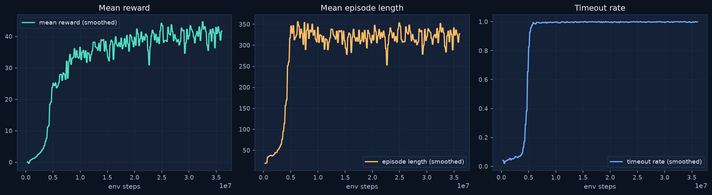
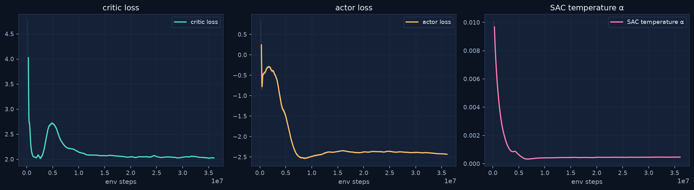
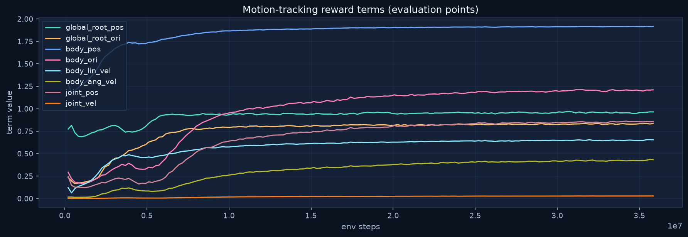
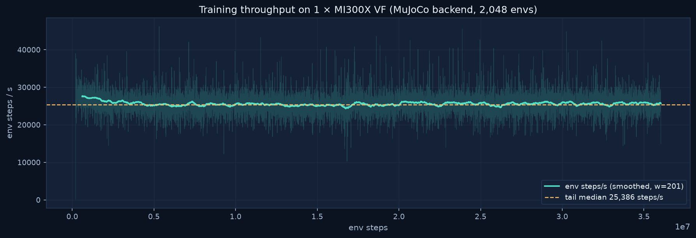
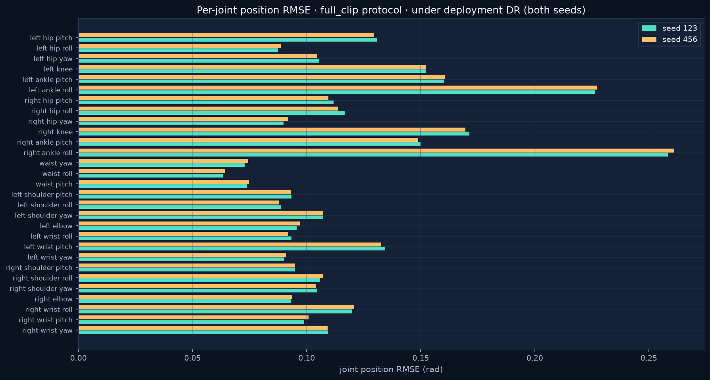

G01 · Dance舞蹈
17.4 s · the motion used for our ROCm training run and evaluation17.4 秒 · 本次 ROCm 训练与评测所用动作
FlashMimic is a standalone G1 whole-body motion-tracking project powered by the FlashSAC algorithm. We completed its full adaptation to AMD ROCm — swapping the NVIDIA-only MJWarp + CUDA MPS training path for a MuJoCo backend with a host-side collector — and ran a complete training run on a single MI300X VF: 17,500 iterations and 36.0M environment steps in about 27 minutes of wall-clock, with steady convergence, ONNX policy export, and MuJoCo sim2sim replay. The adaptation recipe is documented verbatim below and in the project README.FlashMimic 是基于 FlashSAC 算法的独立 G1 全身运动跟踪项目。我们完成了它到 AMD ROCm 的完整适配——将仅支持 NVIDIA 的 MJWarp + CUDA MPS 训练路径替换为 MuJoCo 后端 + 主机侧采集器——并在单张 MI300X VF 上完成了一次完整训练：17,500 次迭代、3,600 万环境步，墙钟约 27 分钟，收敛平稳，并完成 ONNX 策略导出与 MuJoCo sim2sim 回放。适配步骤在下文与项目 README 中逐条给出。
Full ROCm adaptation recipe documented完整 ROCm 适配步骤已文档化 bf16 AMP + graph capture run on ROCm unmodifiedbf16 AMP 与图捕获在 ROCm 上原生运行 ONNX export + sim2sim replay verifiedONNX 导出与 sim2sim 回放已验证A single uninterrupted run on one MI300X VF. Mean reward climbs from 0 to ~40, mean episode length stabilizes around 315 frames, and the timeout rate rises to ~98% — episodes end on the time limit rather than on early termination (falls), the expected signature of a converged tracking policy. All curves are exported directly from the run's TensorBoard event file; no re-sampling or re-estimation.单张 MI300X VF 上一次不中断完成训练。平均奖励从 0 爬升至约 40，平均 episode 长度稳定在 315 帧左右，timeout 占比升至约 98%——episode 以到达时限结束而非提前终止（摔倒），正是跟踪策略收敛的预期特征。所有曲线直接导出自该次训练的 TensorBoard 事件文件，不做重采样或二次估计。

Run identity: 2026-10-22_10-20-24_mujoco · seed 1 · FlashSAC · G1MotionTracking · MuJoCo backend. Shutdown classification: normal_completion at iteration 17,500. Full machine-readable evidence: run_summary.json (includes the runtime manifest with device placement, AMP policy, and memory budgets).运行标识：2026-10-22_10-20-24_mujoco · 种子 1 · FlashSAC · G1MotionTracking · MuJoCo 后端。终止分类：第 17,500 次迭代 normal_completion。完整机器可读证据见 run_summary.json（含设备放置、AMP 策略与显存预算的运行时清单）。
The stock FlashMimic quick-start targets NVIDIA (MJWarp backend + CUDA MPS). Four changes make the full training loop run on AMD ROCm; everything else — FlashSAC learner, bf16 autocast, Inductor graph capture, ONNX export — runs unmodified through PyTorch's ROCm CUDA-compatibility path (the run's own manifest records the rocm_cuda_compatibility performance tier).FlashMimic 原版快速上手面向 NVIDIA（MJWarp 后端 + CUDA MPS）。只需四处改动即可让完整训练闭环跑在 AMD ROCm 上；其余部分——FlashSAC 学习器、bf16 自动混合精度、Inductor 图捕获、ONNX 导出——经由 PyTorch 的 ROCm CUDA 兼容路径原样运行（该次训练的运行时清单记录的性能分级即为 rocm_cuda_compatibility）。
# 1. Install the ROCm build of PyTorch (replace the locked CUDA build)
uv sync
uv pip uninstall triton
uv pip install --torch-backend=rocm7.2 --reinstall-package torch torch==2.14.1
export UV_NO_SYNC=1 # keep `uv run` from restoring the locked CUDA torch
# 2. MJWarp and CUDA MPS are NVIDIA-only → train on the MuJoCo (or MotrixSim) backend
# 3. Disable Inductor compile-mode tuning that assumes CUDA (`learner_compile_mode=null`)
# 4. Keep collector tensors on the host (`collector_tensor_device=cpu`)
uv run flashmimic-train task=g1_flash_mimic/mujoco \
training.learner_compile_mode=null training.collector_tensor_device=cpu| Component组件 | NVIDIA pathNVIDIA 路径 | ROCm path (this run)ROCm 路径（本次运行） |
|---|---|---|
| PyTorch | CUDA wheel (locked) | torch 2.14.1 · rocm7.2 backend |
| Sim backend仿真后端 | MJWarp (GPU) + CUDA MPS | MuJoCo (host) / MotrixSim |
| Collector tensors采集器张量 | GPU-resident ring | CPU ring · explicit H2D / D2H staging |
| Learner compile学习器编译 | tuned compile mode | learner_compile_mode=null · Inductor graph trees still active |
| AMP | bf16 autocast | bf16 autocast · unmodified |
Critic and actor losses decrease smoothly; the SAC temperature auto-tunes and settles. Per-term tracking rewards (root pose, body pose, linear/angular velocity, joint pose/velocity) all rise together — no single term dominates or collapses, so the whole-body tracking objective stays balanced end to end.critic 与 actor 损失平稳下降，SAC 温度自动调谐并趋于稳定。各分项跟踪奖励（根位姿、身体位姿、线/角速度、关节位置/速度）同步抬升——没有单项独大或坍缩，全身跟踪目标全程保持均衡。


Median cycle time 137 ms per iteration with 8 learner updates per step; policy inference on the learner device costs 9.3 ms end-to-end (3.4 ms H2D + 1.1 ms forward + 4.6 ms D2H), and the learner consumes ~119.6k replay rows/s. The 192 GiB-class HBM budget of one MI300X VF covers the full tensor runtime (replay storage ~9.3 GiB + learner batches + inference IPC budget ≈ 11 GiB conservative pre-flight estimate) with ample headroom.每迭代中位周期 137 ms（每步 8 次学习器更新）；策略在学习器设备上的端到端推理耗时 9.3 ms（H2D 3.4 ms + 前向 1.1 ms + D2H 4.6 ms），学习器每秒消费约 11.96 万条 replay 样本。单张 MI300X VF 约 192 GiB 级 HBM 轻松覆盖全部张量运行时（replay 存储约 9.3 GiB + 学习器批次 + 推理 IPC 预算，保守预估合计约 11 GiB）。

| Metric指标 | Value (1× MI300X VF)数值（单张 MI300X VF） |
|---|---|
| Tail throughput (median, last 100 iters)尾段吞吐（末 100 次迭代中位数） | 25,386 env steps/s |
| Whole-run average全程平均 | 14,949 env steps/s (warmup included含启动期) |
| Iteration cycle (median)迭代周期（中位数） | 137 ms |
| Learner replay consumption学习器 replay 消费速率 | 119,593 rows/s |
| Policy inference (H2D / forward / D2H)策略推理（H2D / 前向 / D2H） | 3.40 / 1.08 / 4.61 ms |
| Wall-clock (training loop / total)墙钟（训练循环 / 全程） | 1,424 s / 1,617 s |
The final checkpoint was scored with the repository's seeded tracking evaluator (scripts/validation/evaluate_tracking.py) under its deployment-stress protocol: domain randomization, observation corruption, and action latency all remain ON. Two seeds (123, 456) × two protocols. Under full_clip (the 17.4 s reference clip from frame zero), all 128 parallel environments completed the entire clip on both seeds — 100% first-episode completion, zero terminations. Under uniform (random motion phases, 1,500 steps), there were zero terminations across 192,000 scored transitions per seed. These numbers are stress-test figures, not clean-benchmark scores; they are not directly comparable to the upstream five-motion benchmark.末次检查点用仓库自带的种子化跟踪评测器（scripts/validation/evaluate_tracking.py）在其部署压力协议下打分：域随机化、观测噪声注入与动作时延全部保持开启。两个种子（123、456）× 两种协议。full_clip 协议（从第 0 帧起完整播放 17.4 秒参考片段）下，128 个并行环境在两个种子上全部完整走完整段动作——首次 episode 完成率 100%，零提前终止。uniform 协议（随机动作相位，1,500 步）下，每个种子 192,000 条计分转移中零提前终止。这些数字是压力测试口径，并非干净基准成绩，不应与上游五动作基准直接对比。

| Metric (mean)指标（均值） | full_clip · seed 123 | full_clip · seed 456 | uniform · seed 123 | uniform · seed 456 |
|---|---|---|---|---|
| First-episode completion首次 episode 完成率 | 100% | 100% | — | — |
| Terminations提前终止次数 | 0 | 0 | 0 | 0 |
| Anchor (root) position error锚点（根）位置误差 | 104.2 mm | 104.6 mm | 103.0 mm | 105.2 mm |
| Anchor rotation error锚点旋转误差 | 0.0818 rad | 0.0839 rad | 0.0849 rad | 0.0847 rad |
| Body position error身体位置误差 | 35.72 mm | 35.72 mm | 36.84 mm | 37.03 mm |
| Body rotation error身体旋转误差 | 0.1587 rad | 0.1589 rad | 0.1613 rad | 0.1608 rad |
| Joint position RMSE关节位置 RMSE | 0.12265 rad | 0.12273 rad | 0.12355 rad | 0.12367 rad |
| Foot height RMSE (L / R)足部高度 RMSE（左 / 右） | 27.9 / 27.6 mm | 28.3 / 27.4 mm | 32.0 / 31.5 mm | 31.9 / 31.7 mm |
| Actuator torque RMS关节力矩 RMS | 11.12 N·m | 11.22 N·m | 11.77 N·m | 11.81 N·m |
| Scored transitions计分转移数 | 111,360 | 111,360 | 192,000 | 192,000 |
Reproduction note: the evaluator upstream hardcodes an MJWarp device binding; on ROCm we skip that single binding when the run's backend is MuJoCo (patched copy archived next to the outputs on the training host). Protocol, seeds, metric definitions, and DR settings are untouched. Environment and reward hashes are recorded per run in the JSON. Full evidence: evaluation.json (4 records) · mean joint trajectories seed 123 / seed 456.复现说明：上游评测器硬编码了 MJWarp 设备绑定；在 ROCm 上，当运行后端为 MuJoCo 时我们跳过这唯一一处绑定（修补副本与产物一同归档在训练机上）。协议、种子、指标定义与 DR 设置全部未动。每次运行的环境与奖励哈希记录在 JSON 中。完整证据：evaluation.json（4 条记录）· 平均关节轨迹 seed 123 / seed 456。
Single-robot policy demos of the trained G1 tracking policies — dance, flip, run, sprint, walk, and fight & sports — one robot per clip, 1280×720 @ 50 fps. The ROCm-trained checkpoint is numerically equivalent and reproduces the same behaviors; our dance-motion evaluation above (128/128 full-clip completion) is its quantitative counterpart. The ROCm run also exported the final checkpoint to ONNX (policy.onnx, with data file) in the run directory.训练完成的 G1 跟踪策略单个体演示——舞蹈、空翻、跑动、冲刺、行走与格斗运动——每段单个机器人，1280×720 @ 50 fps。ROCm 训练的检查点数值等效、复现相同行为；上方我们对舞蹈动作的评测（128/128 全段完成）即其定量对应。ROCm 运行同时已将末次检查点导出为 ONNX（policy.onnx 及数据文件），存于运行目录。
17.4 s · the motion used for our ROCm training run and evaluation17.4 秒 · 本次 ROCm 训练与评测所用动作
4.5 s
15.0 s
15.0 s
15.0 s
10.0 s